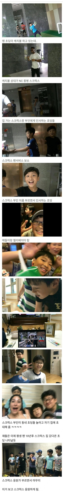

야구선수 팬서비스 레전드.jpg
댓글
몇년전이냐 대체
기원후면 근황에 포함된다더라
10년 전
훈훈
8,9년전 선수니까...쟤들 대충 고3쯤이겠네 ㅋㅋㅋㅋ
ㅋㅋㅋㅋ
스크~ 럭스~ 오 오 오 오 오~
평생팬 확보!!!
스포츠 산업에서 정말 중요한 지점 이네

몇년전이냐 대체
기원후면 근황에 포함된다더라
10년 전
훈훈
8,9년전 선수니까...쟤들 대충 고3쯤이겠네 ㅋㅋㅋㅋ
ㅋㅋㅋㅋ
스크~ 럭스~ 오 오 오 오 오~
평생팬 확보!!!
스포츠 산업에서 정말 중요한 지점 이네
쟤네 성인 됐을텐데